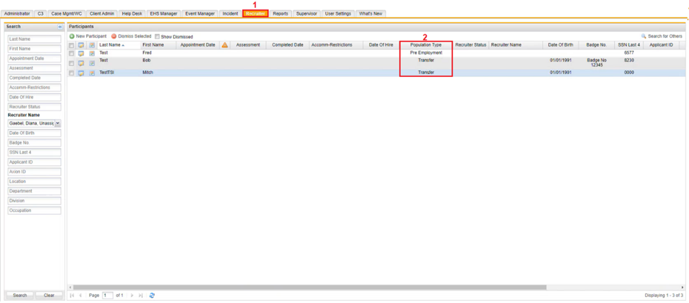

Viewing Population Types
To View Populations Types
- Click the Recruiter tab on the horizontal navigation panel.
- In the Participants section, you can view a list of population types included by the administrator.
There are different ways that population types can be made visible to recruiters outside configuration:
- Java feed Recruiters can change a configured population type directly in a participant record.
- Recruiters can change a configured population type directly in a participant record.
